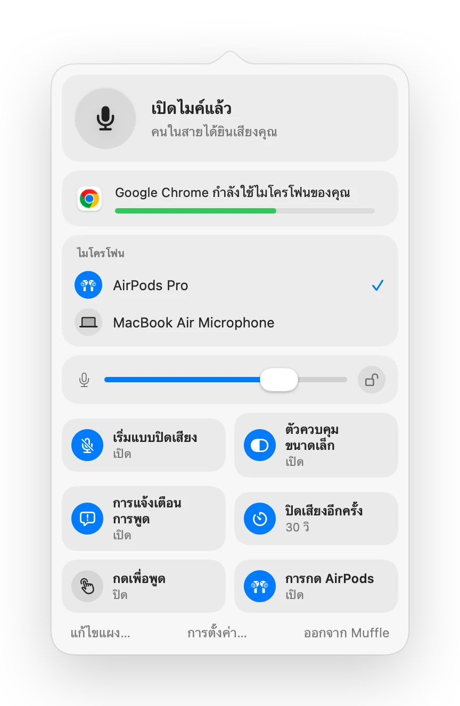

วิธีปิดเสียงการโทรในทุกแท็บเบราว์เซอร์บน Mac
การประชุมออนไลน์ย้ายมาอยู่บนเบราว์เซอร์มากขึ้นเรื่อยๆ ทั้ง Google Meet, Teams บนเว็บ, ออฟฟิศเสมือนจริงอย่าง SoWork และ Gather, Whereby รวมถึง Jitsi ซึ่งแต่ละบริการต่างมีปุ่มและปุ่มลัดปิดเสียงของตัวเอง และจะกดได้เฉพาะเวลาที่แท็บนั้นเปิดอยู่ด้านหน้าสุดเท่านั้น
นอกจากนี้ เบราว์เซอร์ยังไม่รองรับการกดปิดเสียงที่ AirPods บน Mac อีกด้วย แต่ Muffle สามารถรับคำสั่งจากการกดหรือปุ่มลัดส่วนกลางปุ่มเดียว แล้วปิดเสียงไมโครโฟนสำหรับทุกแท็บพร้อมกันทันที
ปิดเสียงการโทรผ่านเว็บทุกรูปแบบ
- 1
ติดตั้ง Muffle และอนุญาตให้เข้าถึงไมโครโฟน
- 2
เปิดการโทรหรือการประชุมของคุณในแท็บเบราว์เซอร์ใดก็ได้
- 3
กดที่ก้าน AirPods หรือกด Control-Option-M เพื่อปิดเสียง จากแอปหรือแท็บใดก็ได้
- 4
ดูที่ไอคอนแถบเมนู หากเป็นสีแดงแสดงว่าไมโครโฟนปิดอยู่

- ออฟฟิศเสมือนจริงมักเปิดไมค์ของคุณค้างไว้หลายชั่วโมง เปิดตัวควบคุมขนาดเล็กแบบลอยไว้เพื่อดูสถานะไมค์ของคุณได้ตลอดเวลา
- การแจ้งเตือน “คุณปิดเสียงอยู่” จะช่วยเตือนเมื่อคุณเริ่มพูดขณะปิดเสียง
คำถามที่พบบ่อย
ทำไมการกด AirPods ถึงไม่ทำงานใน Chrome
Chrome ไม่รองรับท่าทางการกดปิดเสียงของ AirPods บน macOS สำหรับหน้าเว็บ Muffle จึงเข้ามารับสัญญาณการกดแทนแล้วปิดเสียงไมโครโฟนโดยตรง
ใช้งานใน SoWork และ Gather ได้หรือไม่
ได้ ทุกเว็บไซต์ที่ใช้ไมโครโฟนของคุณจะถูกปิดเสียงเมื่อ Muffle ปิดการทำงานของไมค์